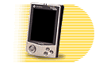
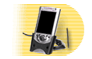
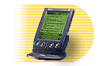
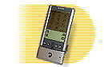
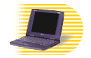
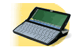

|
Handheld PC (HPC) vendors will readily admit that their devices are not meant as
full-time notebook replacements. The target user is someone who needs quick access
to personal information managment (PIM) data, reasonable access to e-mail, and the
ability to view and edit small files.
In this rapidly expanding market there are currently some key players. Their products vary in abilities and operating systems. Here are few of the current market leaders: |
|
Casio Cassiopeia E-100
The Cassiopeia offers a dazzling 16-bit color display, a whopping 16MB of RAM, and a stereo headphone jack. But is prone to occasional system hangs and stutters. |
 |
|
Compaq iPaq H3650
This shiny, silver speed demon has a great screen and some thoughtful extras that make it much easier to use than other Pocket PCs. Its processor runs at a brisk 206 MHz, about 70 MHz faster than the HP Jornada 545 or the Casio Cassiopeia E-115. The difference is remarkable, especially when you have several applications running. |
 |
|
Palm IIIx
the Palm IIIx is practically identical to the older, heftier Palm III. But don't let the familiar looks fool you--the Palm IIIx includes more RAM (for a total of 4MB) and features an internal expansion slot. |
 |
|
Sony CLIE
The Palm has undergone yet another face-lift, this time from the masters of high-tech design at Sony. The CLIE, Sony's tiny, new handheld, adds two features not seen on previous Palm organizers: Memory Stick expansion and a jog dial to aid in navigation. These changes aren't a revolution, but they are enough to earn our top recommendation. |
 |
|
HP Jornada 545
Loaded with the new Pocket PC operating system, the slick HP Jornada 545 Color is capable of doing just about anything a business desktop computer can do. From Outlook, Word, and Excel to image editing and Web surfing, this handheld does it all. |
|
|
HP Jornada 820
This 2.5-pound system packs the best handheld features--easy portability, long battery life, instant boot-up, and relative affordability--into a design you could easily mistake for a small Windows notebook, even though it's actually bigger than some notebooks. |
 |
|
Psion Revo
The Revo, an update of Psion's popular Series 5 device, has a design somewhat reminiscent of the first generation of Windows CE handhelds. It combines notebooklike functionality with pocket-sized portability, but as with those earlier CE devices, the Revo's miniature keyboard can make data input a chore. However, the intuitive interface and smaller size make it a truly useful handheld. |
 |